受付け管理システムのご案内
令和5年4月より、マイナンバーカード受付け対応に伴い、予約外の患者さまに受付け管理システムを導入致しました。
- 予約の無い患者さまは、まず受付けをiPadの画面から操作してもらい、受付番号の紙を発券してお待ちいただきます。順番にお呼び出ししますので、受付番号の紙を持って待合室でお待ちください。
- 予約のある患者さまは、診察券入れの箱に診察券を入れてもらい、お声がかかるまで待合室でお待ちください。
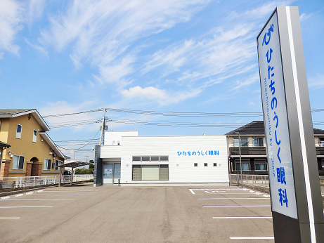
診療案内
診療方針
患者さまに信頼され、親しまれる眼科医療の提供を掲げます。
- 外来業務の充実に努め、スムーズな診療ができるようチームワークや外来システムの向上を図ります。
- 十分なインフォームドコンセントや、より分かりやすい説明を心掛けます。
- 最新の医療から患者さまに合った治療を第一に考えます。
診療内容
- 眼科一般
- 日帰り白内障手術
- 緑内障
- 糖尿病網膜症
- 小児眼科
- レーザー治療
- めがね処方
- コンタクトレンズ
受診される方へのお願い
- コンタクトレンズ自体はじめてで装用練習の必要な方は、現在スタッフの不足のため合わせることが出来ません。ご了承のほど宜しくお願い致します。
- メガネ作成希望の方は、午前は11:00まで、午後は17:00までに受付をして下さい。
- 眼底疾患などの精査で、散瞳検査を行うと約4時間は見えづらい状態が続きますので、車を運転されて来る際には、ご注意願います。
- 診療の受付終了の間際では、散瞳検査などを含めた詳しい検査が行えない場合もありますので、受付終了の30分〜1時間前にはご来院頂けると幸いです。
- 混雑状況によっては午前中の受付を終了する場合があります。
- 多人数での付添いの方は、ご遠慮願います。（患者さん一人につき、付添いの方一人でのご協力を）
診療時間
| 診療時間 | 月 | 火 | 水 | 木 | 金 | 土 | 日・祝 |
|---|---|---|---|---|---|---|---|
| 午前 9:00〜12:00 | ○ | ○ | ○ | ／ | ○ | ○ | ／ |
| 午後 14:00〜18:00 | ○ | ※ | ○ | ／ | ○ | ○ | ／ |
- ※火曜日午後は手術のため休診となります。
- 木曜日・日曜日と祝日は休診です。
- 土曜日は混雑のため、初めてのコンタクトレンズ合わせは行えません。
コンタクトレンズ取り扱い種類と価格（税込み）
1日交換タイプ
| 商品名 / メーカー | 価格 |
|---|---|
| MyDay（マイデイ）/ クーパービジョン | 30枚入り ￥3,100 / 90枚パック ￥8,300 |
| デイリーズ トータルワン / アルコン | 30枚入り ￥4,250 / 90枚入り ￥11,500 |
| アクアロックス ワンデーUVシン / ボシュロム | 30枚入り ￥3,200 / 90枚入り ￥8,600 |
| エアグレード ワンデー UV ダブルモイスチャー / シード | ￥3,300 |
2週間交換タイプ
| 商品名 / メーカー | 価格 |
|---|---|
| エアグレード 2week / シード | ￥3,200 |
| アクアロックス / ボシュロム | ￥3,050 |
| トータル14 / アルコン | ￥3,950 |
| アキュビューオアシス / ジョンソンアンドジョンソン | ￥3,300 |
当院では、ハードコンタクトレンズ・乱視用ソフトコンタクトレンズを扱っておりません。ハードコンタクト希望の方、乱視があって乱視用コンタクトレンズの適応となる方は、他のコンタクトレンズ取り扱い店を勧める場合がございます。
「日本眼科医会」作成の啓発動画「コンタクトレンズはじめたの」（全4話）を紹介しています。コンタクトレンズの扱いには十分注意して、定期的な眼科の検査をお願いいたします。
院内設備
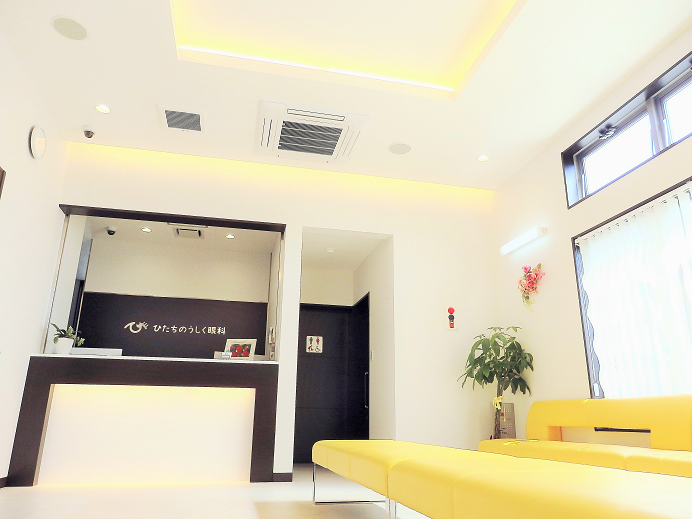
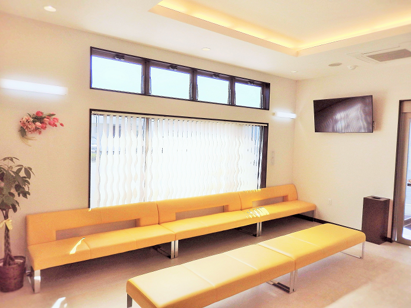
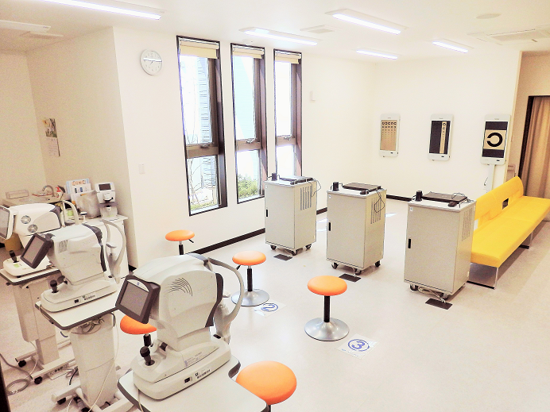
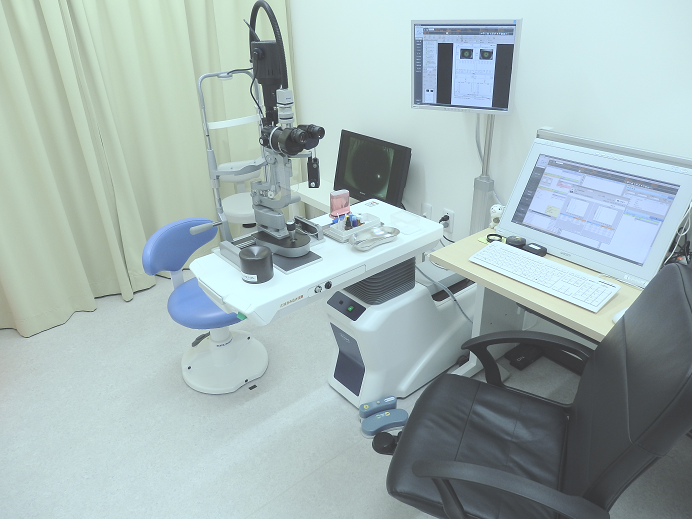
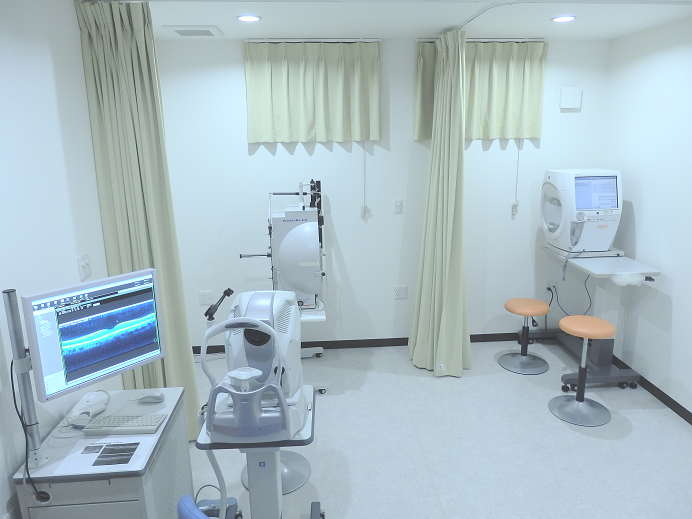
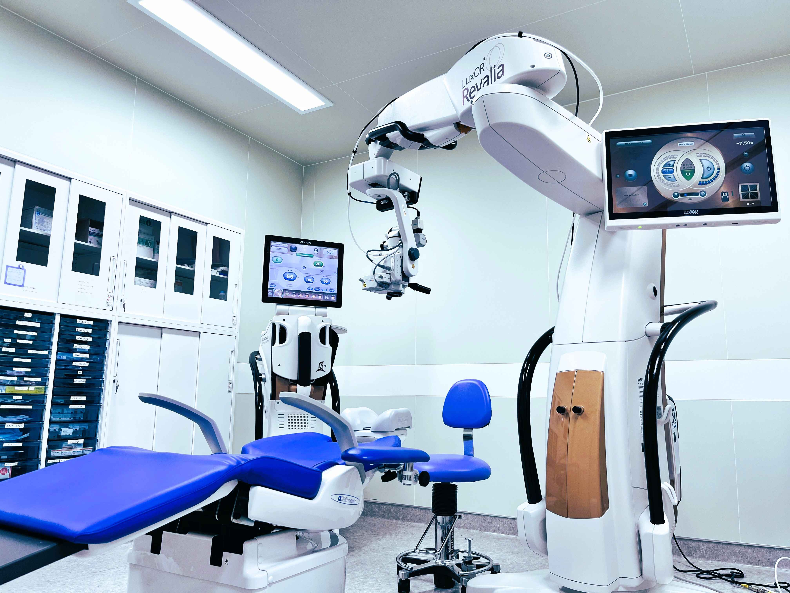
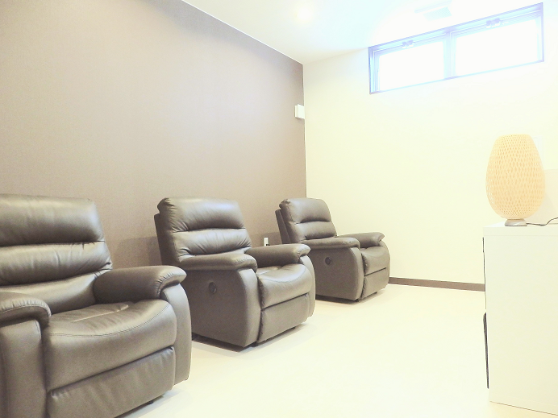
眼科の検査機器
オートレフ・ケラト・トノ・パキメーター
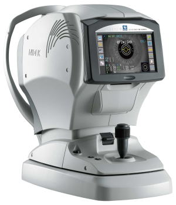
近視や遠視、乱視を測る機械です。また、目の硬さである眼圧も同時に測定致します。
スペキュラーマイクロスコープ
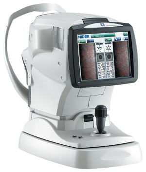
角膜の内側の細胞である内皮細胞の数を測る機械です。白内障手術前後の評価に計測いたします。
光学式眼軸長測定装置（ARGOS）
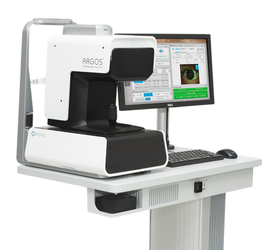
眼軸を眼に触れずに計測します。白内障手術の術前に検査し、眼内レンズの度数を決める重要なデータとなります。
超音波画像診断装置
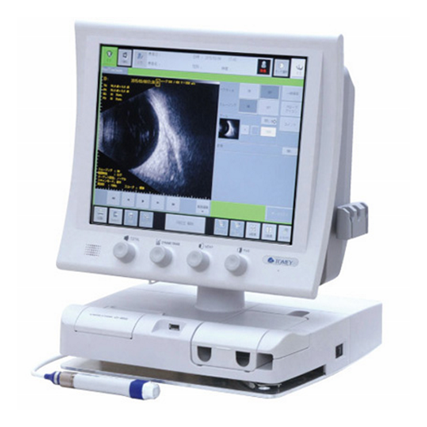
眼瞼の皮膚から眼球内を超音波測定します。網膜剥離の診断にとても有用です。
液晶視力表および検眼レンズ・視力検査台
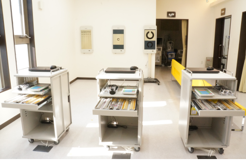
3台完備。全面液晶ディスプレイで、0.03の視標から計測可能です。
光干渉断層計（OCT）
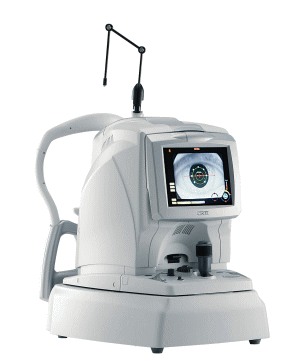
網膜の厚みを測る機械です。網膜疾患の評価や緑内障の経過指標に有用です。
視機能評価機アイモ
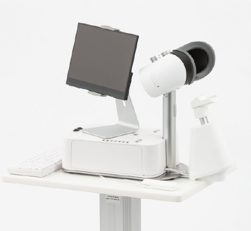
両眼開放で暗室不要。自動で行う視野検査およびコントラスト感度を計ることができます。
ゴールドマン視野計
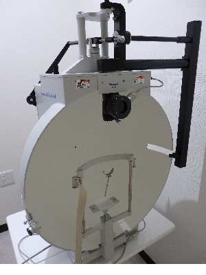
検査員と一緒に測る機械です。患者さんに合わせたペースで計測可能です。
広角眼底LED共焦点スキャナー
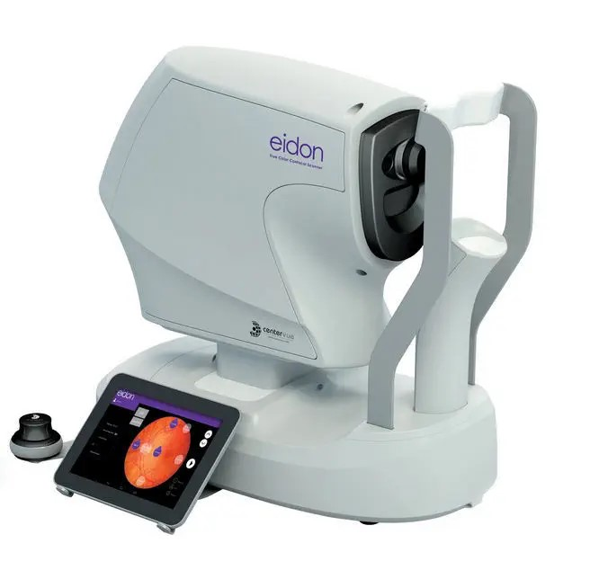
眼の奥の網膜をイメージ写真に出力する機械です。糖尿病網膜症などの網膜疾患の客観的評価に有用です。
網膜光凝固装置（レーザー）
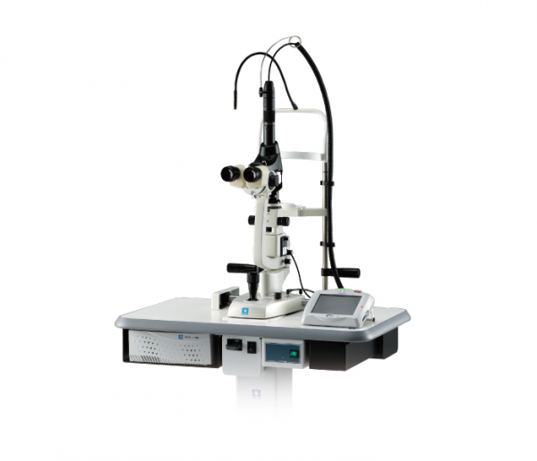
主に糖尿病網膜症治療に行われるレーザー機器です。
網膜電位図刺激装置
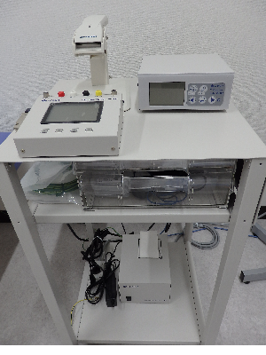
網膜の光に対する電気的な信号を波形にして記録する装置です。眼の心電図のようなものです。
大型弱視鏡（シノプトフォア）
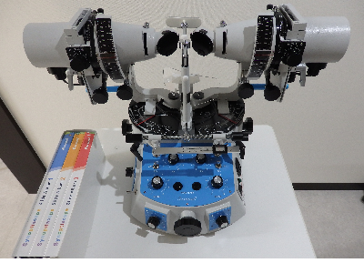
斜視の検査に使用します。両眼視・斜視角・網膜対応・眼球運動などが記録できます。
YAGレーザー
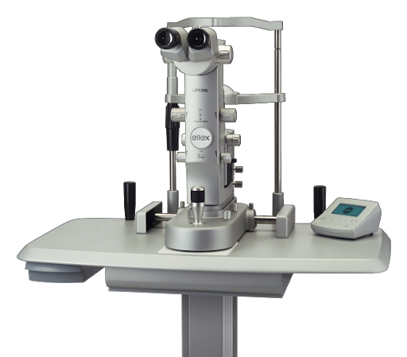
後発白内障に対するレーザー治療機器です。痛みもなく、2〜3分の治療で終わります。
スポットビジョンスクリーナー（SVS）
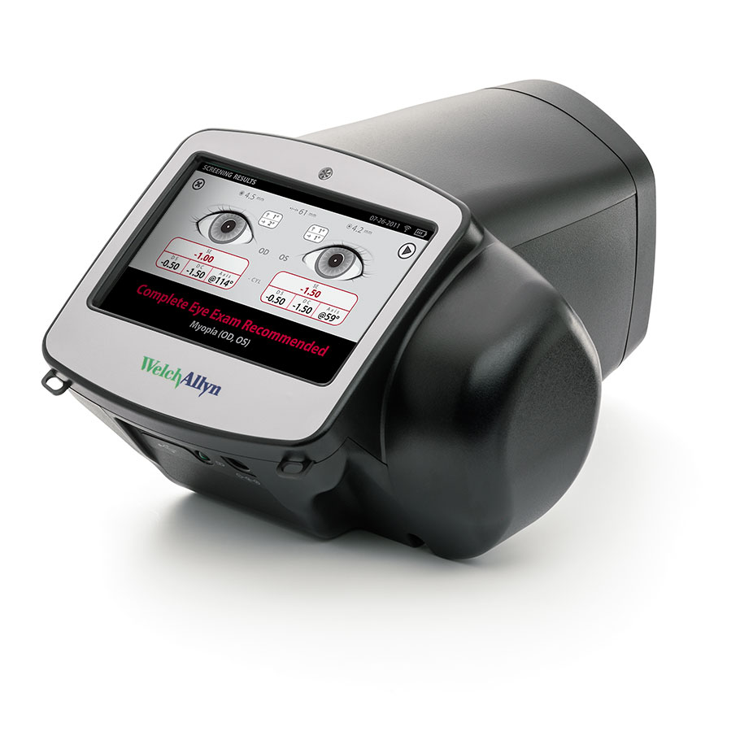
ある一定の距離を保って、遠視や近視、乱視を測れる機械です。小さなお子様にも行えます。
ウェーブフロントアナライザー
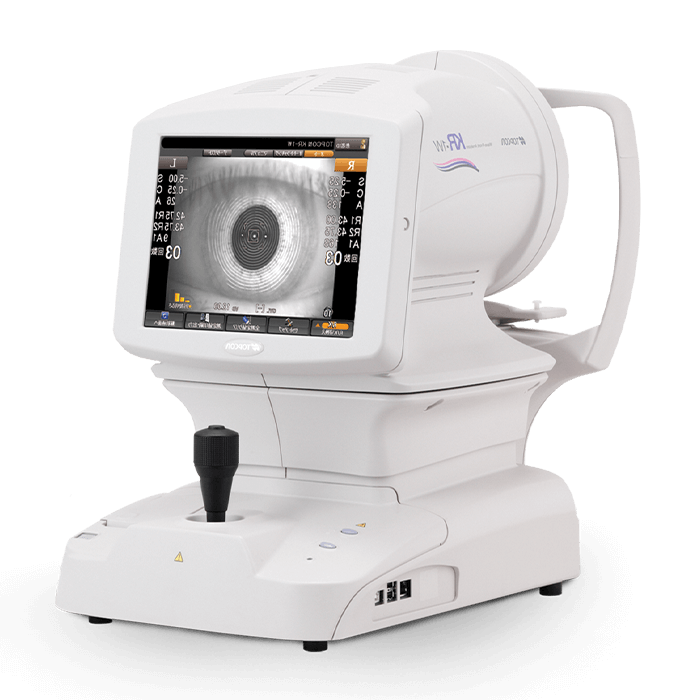
通常の機器では測れない細かい乱視（不正乱視）である高次収差を測定できます。
レーザーフレアメーター
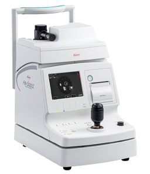
眼内における炎症の程度を非接触・非侵襲的かつ定量的に測定できる装置です。
院長紹介・施設基準
院長からのあいさつ
ホームページをご覧頂きありがとうございます。理事長および院長の山本です。このひたち野うしくに根付いた眼科医療を目指し、日々精進しています。
現在、超高齢化社会において健康寿命の重要性がさけばれている中、目の健康もまた重要な役割を担っていると考えております。目からの情報の減少は認知症発症の危険性にも繋がると考えられており、ご年配の方が快適で充実したシニアライフを送るお手伝いをしたいと考えております。
当院では最新の検査機器、治療機器を導入しておりますので、より迅速で正確な診断を行えると共に、毎回の検査結果をデータ化する事によって、患者さま一人ひとりの所見の経過をより確実に観察する事ができます。また、私も二児の子供を持つ父親として、無限の可能性を秘めた子供たちの未来を守るべく小児の眼科医療にも力を入れたいと思っております。
医療法人社団 再光会 ひたちのうしく眼科 理事長兼院長（管理者） 山本 敏哉
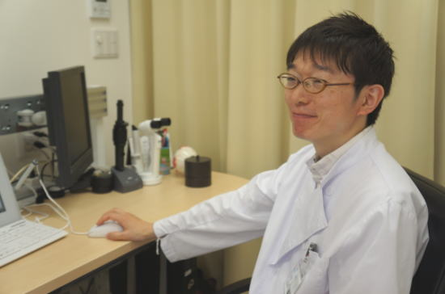
院長略歴
- 平成11年3月 帝京大学医学部医学科卒業
- 平成11年5月 帝京大学附属病院眼科入局
- 平成13年4月 牛久愛和総合病院眼科勤務
- 平成18年4月 牛久愛和総合病院眼科医長就任
- 平成28年5月 ひたちのうしく眼科開院
- 令和7年4月 医療法人社団 再光会設立
所属学会・資格など
- 日本眼科学会 / 日本眼科手術学会 / 日本角膜学会
- 平成16年10月 日本眼科学会認定 眼科専門医取得
- 平成28年11月 医学博士（筑波大学）授与
施設基準
- 保険医療機関
- 難病指定医医療機関
- 生活保護法指定医療機関
- 身体障碍者に対する医療等に関する法律に基づく指定医療機関
- 被爆者一般疾病医療機関
基本診療料：夜間/早朝等加算（土曜日の午後に受付けの方は加算）、電子的診療情報連携体制整備加算3、外来・在宅ベースアップ評価料(I)、一般名処方加算、短期滞在手術等基本料1（白内障手術、翼状片手術、眼瞼内反症手術、眼瞼下垂手術が対象）、バイオ後続品導入初期加算、明細書の無料発行を行っています。
保険外負担に係る費用：診断書（当院書式）3,000円、生命保険診断書 5,000円、処方箋（再発行）500円、支払証明書 500円、診察券（再発行）200円。
疾患の説明
白内障
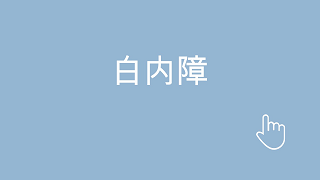
眼の中にある"水晶体"と呼ばれるレンズが濁る病気で、霞みや眩しさを感じ、次第に視力の低下を自覚してきます。最も多い原因は加齢によるものです。近年の白内障手術の技術や機械の進歩は目覚ましく、日帰り手術に対応しています。
緑内障
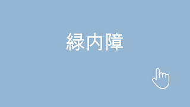
眼圧の上昇などにより視神経が障害され、視野が狭くなっていく病気です。緑内障は網膜神経の病気のため一度失った視野は戻らないことから、自覚のない早期に発見し進行を抑えることが重要です。
糖尿病網膜症
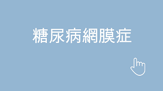
糖尿病発症の後にゆっくりと現れてくる目の合併症で、網膜の神経組織に出血や循環障害などを引き起こします。自覚のない発症前や発症初期の段階で発見し、進行予防することが理想とされています。
多焦点眼内レンズのお話
白内障手術の際、濁った水晶体を取り除き、人工の眼内レンズに置き換えます。多焦点眼内レンズは遠く〜近くまでの距離にピントが合い易くなる一方、ハロー・グレア・スターバーストなどの光の散乱症状が現れる可能性があります。多焦点眼内レンズは保険適応外（選定療養）のレンズとなり、通常の単焦点眼内レンズとの差額を自費でお支払い頂く必要があります。
- 連続焦点眼内レンズ（テクニス・オデッセイ）— 遠方から近方まで連続的範範囲で視力を維持します。乱視矯正対応の眼内レンズもあります。
- 3焦点眼内レンズ（クラレオン・パンオプティクスPRO）— 94%の光利用率を実現し、遠方から中間距離のコントラストが向上しています。
- 3焦点眼内レンズ（ファインビジョンHP）— 近方重視型。近方距離は約33cmで、近方の作業を重視される方にお勧めです。
| 焦点タイプ | モデル | メーカー | 片眼金額（税込み） | 両眼金額（税込み） |
|---|---|---|---|---|
| 連続焦点・乱視用 | オデッセイ | AMO | 340,000円 | 680,000円 |
| 3焦点・乱視用 | パンオプティクスPRO | Alcon | 360,000円 | 720,000円 |
| 3焦点（乱視無し） | ファインビジョンHP | BVI | 290,000円 | 580,000円 |
多焦点眼内レンズを希望の患者さまには、適切なレンズを選択頂くため、術前検査時にも詳しい説明をさせて頂きます。
小児近視進行抑制点眼剤 リジュセア®ミニ点眼液0.025%
リジュセアミニ（低濃度アトロピン）点眼液は、眼球の大きさが成長によって伸びるのを抑えることで、近視の進行を抑制することが期待できるお薬です。主に対象となるお子様は、軽度または中等度の近視で5歳〜15歳の方です。
- 1日1回、1回1滴、就寝前に両眼に点眼します（1本分）。防腐剤を含まない一回使い切りタイプです。
- 近視の進行が安定化する10代後半まで治療を続けることが望ましいです。
- 主な副作用：羞明（まぶしさ）、霧視（かすみ目）、調節障害（ピントが合い辛い）。
- 保険適応外・全額自己負担（選定療養）：4,000円／30本（税込み）。
診療の流れ：①診察で近視を確認後1か月分を処方 → ②1か月後に再受診し問題なければ2か月分を処方 → ③以後3か月毎の定期受診で3か月分を処方。半年毎に屈折および眼軸検査を実施・記録します。
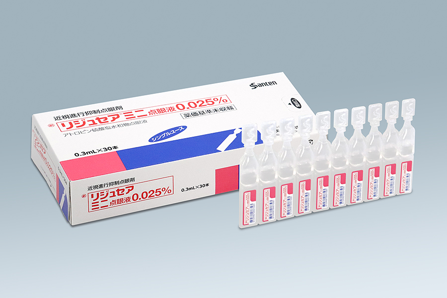
サプリメント紹介
サンテ グラジェノックス
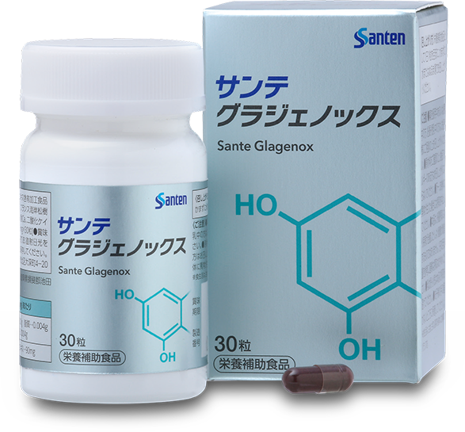
眼などの健康を保つ栄養分である「松樹皮エキス」と「ビルベリーエキス」をバランスよく配合したサプリメントです。
サンテ ウェルビジョン
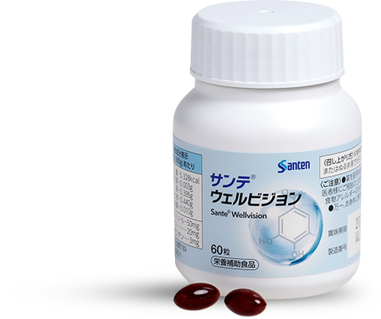
眼などのエイジングに着目して開発した「ルテイン」と「ヒシ果皮ポリフェノール」を高容量に配合したサプリメントです。
受付け管理システム手順
当院では、予約の無い患者さまに順番にお待ちいただけるよう、以下に手順を示します。
- まずはiPadの画面をタッチし、"順番受付する"をタッチしてください。
- 診察される患者さまの人数を入力していただきます。
- 本日の症状や目的に合わせてボタンにタッチしてもらいます。充血のある方は"充血ある方"ボタン、目の表面や瞼の症状は"目の表面、瞼の症状"ボタン、それ以外は"その他、見え方など"ボタンをタッチ。薬処方のみやコンタクト、予防接種などはそれぞれのボタンをタッチしてください。
- 携帯電話をお持ちの患者さまは、携帯番号の入力をお願いしております。入力された携帯番号は記録されず、診療終了後にデータは消去されます。呼び出し時に携帯電話に着信がきますので、音声ガイダンスに従って受付けまでお越しください。SMS希望の方は"SMS呼出"をタッチしてください。
- 受け付け番号札が発行されますので、この番号札をお持ちになって院内待合室でお待ちください。問診票などの案内後、院外待機が可能となります。
- 携帯電話でQRコードからサイトにアクセスすると、呼び出し状況の確認や待ち時間（推定）が表示されます。
何か分からないことがあれば、スタッフにお声をかけてください。
お知らせ
- 年末年始休診のお知らせ — 2026年12月29日(火)まで通常診療を行い、12月30日(水)よりお休みとさせて頂きます。2027年の年始の診療は1月5日(火)からとなります。
- インフルエンザ予防接種（令和8年度）— 令和8年10月1日より開始。料金は4,000円（1回目）、牛久市在住の65歳以上の方（市発行の予診票持参）は1,400円、2回目は3,500円。予約制ではありません。
- 予約外の診療制限 — スタッフの人数不足に伴い予約外の診療制限をさせて頂く場合があります。緊急性のない視力検査の必要な患者さんは後日の対応とさせて頂きます。
- 夏期休診のお知らせ — 2026年8月8日(土)から8月16日(日)までお休みとさせて頂きます。
スタッフ募集
視能訓練士（常勤・非常勤）求人
視能訓練士の増員を考えております。新卒者および職務経験者であっても暫くブランクがあって自信のない方なども、丁寧に指導します。
- 常勤：新卒23.4万、中途24.2万〜（月額基本給＋各種手当等合計、交通費別途、年に2回賞与あり）＊経験に応じて要相談
- 非常勤：時給1,600円〜＊経験に応じて要相談
- 勤務時間：8:45〜18:15の間の8時間で、木曜・日曜・祝日は休診
- 福利厚生：雇用保険・健康保険・厚生年金・労災保険
正看護師（常勤）求人
眼科未経験で自信のない方なども、丁寧に指導します。安心して働くことができますので、ぜひご応募ください。
- 給与：28万〜（月額基本給＋各種手当等合計、交通費別途、年に2回賞与あり）＊経験に応じて要相談
- 勤務時間：8:45〜18:15の間の8時間で、木曜・日曜・祝日は休診
- 福利厚生：雇用保険・健康保険・厚生年金・労災保険
まずは、お電話（029-871-8355）にてお気軽にお問い合わせの上、履歴書をご郵送ください。
アクセス
当院はひたち野うしくに位置するため、隣接する地域（土浦市、荒川沖、阿見町、牛久市、龍ヶ崎市）の方面からもアクセス良好です。また、つくば方面からも学園西大通り一本でアクセスできる為、大変便利です。
- 住所
- 〒300-1207 茨城県牛久市ひたち野東4-7-2
- FAX
- 029-871-8356
- 電車の場合
- 常磐線ひたち野うしく駅東口を出て、西大通りに沿って東へ徒歩約8分。カスミひたち野牛久店の交差点を西大通りに沿って200m進むと、右側に位置します。
- 自動車の場合
- 牛久つくばインターチェンジから土浦・牛久方面へ約5km。西大通りは中央分離帯が存在しているため、先のエネオスの交差点をUターンしてください。医院入り口は（西大通り側でなく）裏となりますので、まつなみクリニックを左折、さらに、むぎのほ薬局を左折してください。
- 駐車場
- 18台（第2駐車場含む）。満車の場合、当院隣のむぎのほ薬局さんの駐車場にもお停め頂けます。
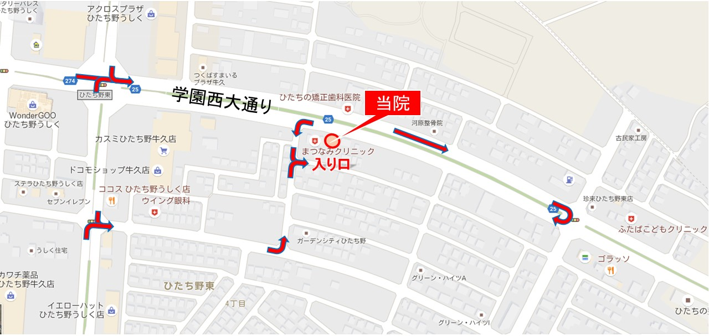
プライバシーポリシー
ひたちのうしく眼科（以下当院）では、個人情報に関する法令およびその他の規範を遵守し、患者さまの大切な個人情報の保護に万全を尽くします。患者さまより取得した個人情報を第三者に開示または提供することはありません（ご本人の同意がある場合・官公署からの要請の場合・法律の適用を受ける場合を除きます）。
個人情報保護に関するお問い合わせ先：TEL 029-871-8355 FAX 029-871-8356 e-mail info@hitachinoushiku-eyeclinic.com ひたちのうしく眼科 山本 敏哉